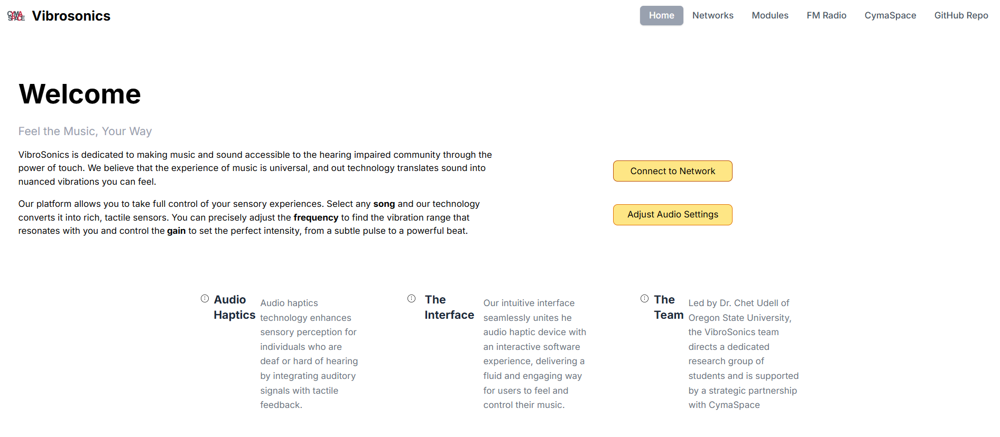
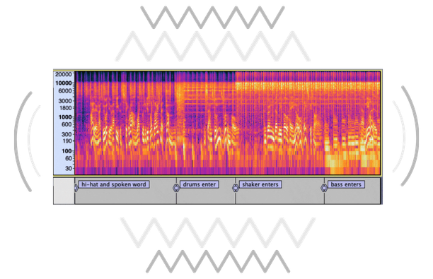
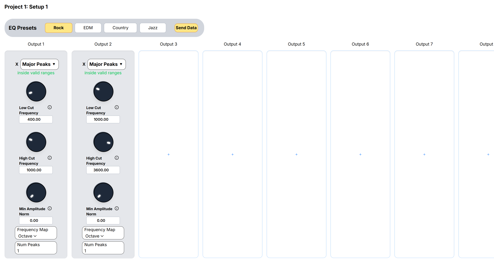

Experience audio through vibration
Vibrosonics is a real-time audio-to-haptics system with an interactive web interface that allows deaf, hard-of-hearing, and sensory-focused users feel sound through vibrarions.

Documentation (Doxygen) \ Hardware: Adafruit ESP32 Feather, MAX9744 Amplifier board, TT25-8 puck transducer, 3.5mm audio jack cable \ Dependencies: AudioLab · AudioPrism · Fast4ier
Table of Contents
- Why Vibrosonics Matters
- Key Features
- Arduino Setup
- Web Development Setup
- ESP32 Web Server Setup
- Developer Notes
- Contributors
Why Vibrosonics Matters
Millions of people experience barriers when it comes to audio-based media such as music, games, alerts, or live events. Vibrosoncis transforms those experiences by converting sound into meaningful tactile feedback.
Instead of hearing a beat, you feel it.

Built in collaboration with Cymaspace, an organization whose goal is to make culture and arts accessible for the deaf and hard-of-hearing community, Vibrosonics is designed to make music, entertainment, and environments more inclusive while also opening up new immersive experiences for everyone. This group makes up our primary audience, as haptic feedback can be used to replace or enhance audio. Some secondary users would be employers whose work environments make pure audio based communication difficult. They could instead receive important audio cues through haptics.
Key Features
Real-Time Audio Conversion Transforms live audio input directly into haptic vibration with minimal latency.
Configurable Settings Through Web Application A browser-based app allows users to adjust haptic feedback in real-time with no recompiling or device flashing required.

Frequency-Aware Feedback Different pitches and intensities map to distinct vibration patterns, preserving musical structure and adding depth.
Accessible by Design Built specifically for deaf and hard-of-hearing users, while also enhancing experiences for others.
View the most stable version on GitHub
Arduino Setup
1. Install Arduino IDE and ESP32 Board Support
- Download Arduino IDE
- Go to Tools > Boards > Boards Manager
- Search and install
esp32by Espressif Systems

2. Set Board and Ports
- Plug in the board (you may need to install USB drivers)
- Go to the top drop down menu and click
Select other board and port... - In the pop up window, search for
Adafruit ESP32 Featherand select it along withCOMXfor port whereXis a number 0-6- You may need to download a driver to see the port (Windows Tutorial)
- On Linux, this is the
ch341driver

3. Add Libraries
Navigate to the Arduino libraries folder. This is usually located in Documents/Arduino/libraries/ for Windows and ~/Arduino/libraries/ for Mac and Linux.
Clone the repositories into the libraries folder:
Verify that the libraries are installed by opening Arduino IDE and going to Sketch > Include Library > Manage Libraries.... You should see AudioLab, AudioPrism, and Fast4ier in the list.
4. Upload a Sketch
You should be ready to use the example sketches or create your own! To upload a sketch to the Vibrosonics hardware:
- Plug in the ESP32 via USB
- Open your own sketch or one of our examples from File > Examples > Vibrosonics > [Example Name]
- Press the upload (➜) in the top left to compile and upload your sketch

Web Development Setup
1. Install Node.js and npm
- Download and install Node.js through your prefered web browser. This will also install npm.
2. Install Dependencies
- Open a terminal and navigate to the
WebApp/directory of the repository. - Run the following command to install the required dependencies:
3. Start the Development Server
- Run the following command to start the development server:
4. Additional Commands
Production Build: To build the application for production, run:
Run Linter Tool: To run ESLint for .js and .jsx files, run:
5. Troubleshooting
If you encounter any issues during setup or development, consider the following steps:
- Ensure that Node.js and npm are correctly installed by running
node -vandnpm -vin your terminal. - Check for any error messages in the terminal and refer to the documentation of the specific tools or libraries being used.
- Make sure all dependencies are installed correctly by running
npm cifor a clean install. If issues still persist, try deleting thenode_modules/directory and runningnpm installagain.
ESP32 Web Server Setup
SD File System Setup: To deploy the WiFi web app onto the ESP32, we'll need to store the web app onto a micro SD card connected to the ESP32. View WebApp/main/fileSys.h for the pin connections, these directions assume that the pins are connected properly.
Note: Uploading the web app onto the SD card only needs to be done everytime a new build of the web app is needed.
1. Setup Upload Mode (Necessary if web app is not on the ESP32, otherwise skip)
- Navigate to the
WebApp/main/config.hfile and uncomment the following line to setup the ESP32 in upload mode
- Build and upload
main.inoin the ArduinoIDE once connected to a COM port. - Connect to the Wi-Fi access point on your device, name of the network is Vibrosonics-Dev.
- Open a web browser and open
http://vibrosonics/dev. - Enter the directory you want to write to and select the file to upload.
- Click the upload button to write the file. Note: Open the Serial monitor in ArduinoIDE to view the files on the SD card.
- Once successful, exit the web app, comment out the
DEV_MODE_ENmacro and rebuild and uploadmain.ino.
2. Connect to the Web App
- Connect to the Wi-Fi access point on your device, name of the network is Vibrosonics-Unsecure.
- Open a web browser and navigate to
http://vibrosonics. - Follow the directions provided by the web app
Developer Notes
Library Architecture
The Vibrosonics library aims to streamline three processes to enable translating audio into the haptic range: audio signal processing, audio analysis and finally audio synthesis. We utilize a few libraries to achieve this.
The first is AudioLab, which handles the audio signals between the external hardware and the processor. It reads audio from the analog-to-digital converters (ADC) and writes signals to the digital-to-analog converters (DAC) for synthesis. The captured audio signals from the ADC are analyzed using the other two library dependencies.
Fast4ier is used to perform the Fast Fourier Transform (FFT) on the signal data, which converts it from a representation of the signal over time (time domain) to a representation of how the signal is distributed over a range of frequency bands (frequency domain). The bandwidth of the frequency domain, or the max frequency, is equal to half of the sample rate of the ADC. Similarly, the number of different frequency bands is equal to half of the window size of the ADC.
AudioPrism is a library which analyzes the frequency domain data using various algorithms. By filtering this data for different AudioPrism analysis modules, we can detect certain elements of the audio signal. With music, this allows us to detect percussion, isolate prominent vocals and melodies, and more. With this analysis, distinct vibrations can be made to model elements of music by re-synthesizing these findings through AudioLab translated down into the haptic frequency range (0-230Hz).
Web App Architecture
The VibroSonics application utilizes both cores on the ESP32 for efficient real-time audio processing and web-based configuration.
System Overview
- Core 0: Handles the web server and HTTP request processing
- Core 1: Runs the real-time audio analysis and haptic synthesis loop
Architecture Components
Frontend (Web App)
- Framework: React/Preact application built with Vite
- Location: Served from SD card on ESP32
- Access: Available at
http://vibrosonicswhen connected to the device's WiFi AP - Pages:
- Landing page for global settings
- Network configuration page
- Analysis modules configuration page
- Communication: Makes HTTP API calls to the ESP32 web server
Backend (ESP32 Web Server)
- Server: WebServer library running on Core 0
- Endpoints: RESTful API for configuration and real-time updates
- Key Functions:
/network/*: WiFi network scanning and connection/analysis/*: Audio analysis configuration management- File serving for static web assets
- Rate Limiting: 500ms minimum interval for real-time setting updates
Inter-Core Communication
- Mechanism: Thread-safe message queue via
HapticSettingssingleton - Flow:
- Web app sends HTTP request to ESP32 server
- Server parses request and creates
QueueMessage - Message added to queue in
HapticSettings - Audio loop (Core 1) checks for pending messages
- Messages processed to update
AnalysisConfig - Configuration changes applied to audio processing pipeline
Audio Analysis Loop (Core 1)
- Real-time Processing: Continuous audio input → analysis → haptic output
- Configuration: Uses shared
AnalysisConfigupdated via message queue - Modules: Dynamic analysis modules (percussion detection, frequency analysis, etc.)
- Synthesis: Generates haptic feedback through AudioLab library
Data Flow
Key Design Decisions
- Dual-Core Utilization: Separates web serving from real-time audio processing for reliability
- Message Queue: Thread-safe communication between cores without blocking
- SD Card Storage: Web app files stored on SD card for easy updates
- Rate Limiting: Prevents web interface from overwhelming the audio processing
- Atomic Configuration Updates: Ensures consistent state during real-time processing

API Classes
VibrosonicsAPI: This is the core class; it is a unified interface for audio processing, analysis and synthesisGrain,GrainList, andGrainNode: These are the components for granular synthesis.Grainis the main grain class, and the list and node classes provide a way to manage a linked list of grains.
Examples
We have an examples folder which contains individual programs that each showcase a different feature or technique possible using Vibrosonics and AudioPrism.
- Start with the
Templateexample to see basic use of the API and for a starting point for your own program. - The
Grainsexample demonstrates using the provided classes for granular synthesis with a frequency and amplitude sweep, duration changes and wave shape variations. Percussionshowcases our current percussion detection method, which uses a specially filtered frequency domain representation as input for an AudioPrism percussion module. It utilizes grains to create haptic feedback corresponding to the detected percussive hits.Melodyis a similar example of strategic frequency domain processing, but to bring out melodic elements of music. These elements are resynthesized by translating the most prominent frequency peaks into the haptic range.Vibrosonicsis our example demonstrating a combination of multiple techniques (PercussionandMelody) to provide a real-time translation of music to tactile feedback. Look here for an in-depth example utilizing the full capabilities of our library.
Contributors
2025-26 Software Team
2024-25 Software Team
Special Thanks
- Dr. Chet Udell (Project leader and manager)
- Nick Synytsia (Developed AudioLab and advised software development for 2024-25)
- Alex Synytsia (Participated in hardware development during 2022-23)
- Vincent Vaughn (Advised software and hardware development)
- Hans Bestel (Project manager for software and hardware development during 2025-26)